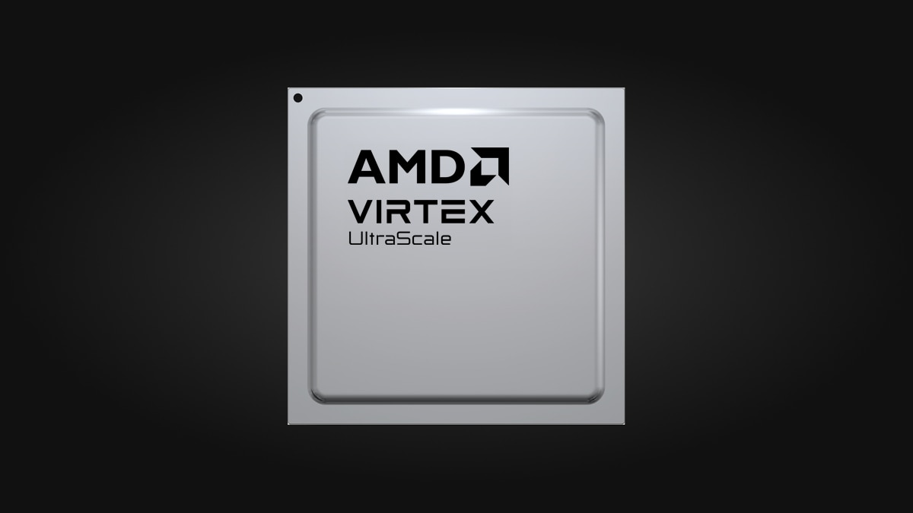

Data centers use one hundred times as much power as most other businesses
do
, according to the The Wall Street Journal.
And this percentage is steadily increasing year by year.

That is equal to the combined total amount of electricity consumed by these major global cities:
| City | Annual Consumption (Terra Watt Hours) | Percentage of Global Production (%) | Image | City | Annual Consumption (Terra Watt Hours) | Percentage of Global Production (%) | Image |
|---|---|---|---|---|---|---|---|
| New York City | 53.65 TWh | 0.18% | Los Angeles | 46.3 TWh | 0.15% | ||
| Chicago | 40 TWh | 0.13% | Houston | 70 TWh | 0.23% | ||
| London | 40 TWh | 0.13% | Paris | 68.2 TWh | 0.23% | ||
| Total | 318.15 TWh | 1.06% |
As a consequence, data center operators like to locate themselves close to reliable supplies of cheap electricity. For example, Gmail is located near the Bonneville Dam in The Cascades, on the River Columbia, in Oregon.

Global electricity production currently amounts to $2 trillion annually - equivalent to the gdp of Italy.

Data centers do do a lot of database look-ups. Every company has a database and every company spends lots of time and money looking stuff up in their database, quickly, because their customers demand it.

If we could make database look-ups just a bit more efficient, data centers would save a quite lot of money on their huge electricity bills - perhaps $100 million per year.
Appa Apps Inc. is prototyping a specialized Silicon chip to perform database look-ups 10 times faster while using 10 times less electricity than generic computers do.

Today, everyone has a mobile phone with a Graphics Processing Unit implemented in Silicon rather than software because the original, software-only versions were far too slow. And every personal computer has a Graphics Processing Unit for much the same reason.

Bitcoin mining used to be done using just software. At one time you could easily mine a few bitcoins every day with a generic notebook computer. Now, you need to use a factory full of specialized Bitcoin miners that do most of their processing in Silicon rather than in software.

Implementing database software effectively in Silicon will help data center operators be more competitive by reducing the cost and time spent doing database look-ups.
Appa Apps Inc. has recently succeeded in synthesizing a Verilog version of the well known database algorithm normally written in C ready for programming into an Field Programmable Gate Array (FPGA).

We are going to a Field Programmable Gate Array to compare the performance of our specialized implementation of the database algorithm with the performance of a generic computer, likewise implemented on the same Field Programmable Gate Array, running the C version of the algorithm.
Hopefully our specialized Field Programmable Gate Array implementation will be able to do database look-ups significantly faster while using less power than the comparable implementation on a generic computer.
If it can, we want to send the major operators copies of the programmed Field Programmable Gate Array mounted on a board so that they can plug it in and see for themselves that they are currently wasting money, needlessly, on their huge electricity bills because they are not using using our technology.
We aim to raise $1 million for a seed round to:

If they provide letters of intent to buy such chips, we will use them to drive a large Series A funding round to convert the Field Programmable Gate Array into an application specific integrated circuit implemented on Silicon chips to reduce the time and electricity consumed doing database look-ups even more effectively.
Just me and Chat GPT

Chat GPT is very useful as it does all the boring low-level coding, letting me concentrate on the problem of what, exactly, should be coded.
Appa Apps Inc. is a class C corporation registered in Austin, Texas.
No, none at all. Just creating the prototype has occupied me fully for the last two years with no time off for anything else.
I will be happy to help you with your project, gratis, if you will try to help me with mine.